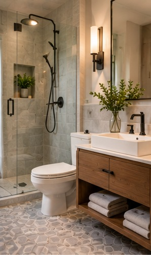

Bathrooms / Renovation Journal
Small Bathroom, Smarter Design
Improve storage, sightlines, and movement without chasing square footage.
Retrospective topic: May 2025 · Oakwaters Journal

Compact bathrooms reward careful placement more than elaborate decoration.
Measure every clearance
Confirm the usable space around the toilet, vanity and shower door. A compact plan can feel generous when circulation and sightlines are protected.
Use storage without visual clutter
Recessed niches, shallow cabinets and wall-mounted accessories can free floor space. Prioritize waterproofing and ventilation over purely decorative upgrades.
Planning a renovation?
Explore what is possible for your home with Oakwaters Construction.
Discuss Your Project →